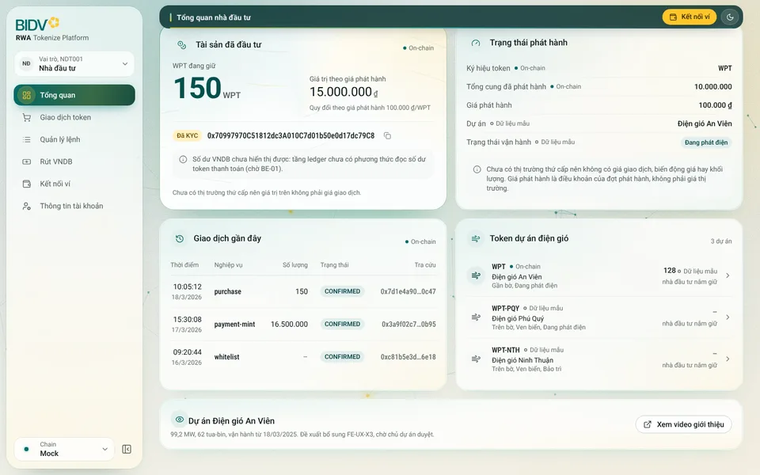
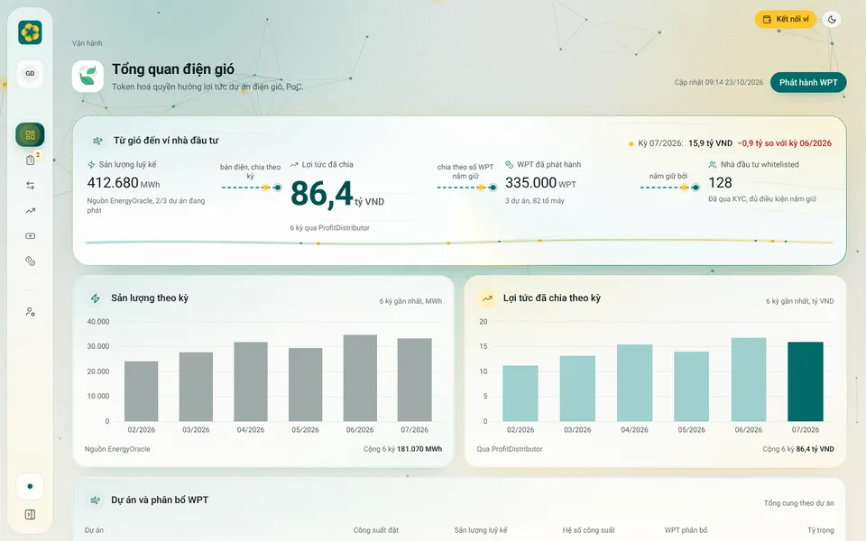
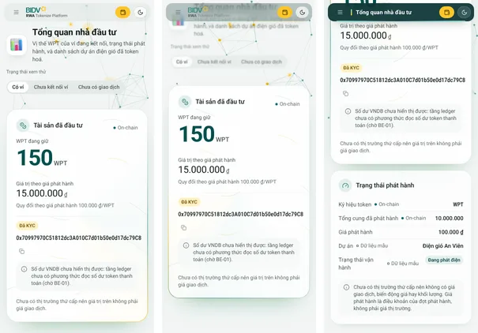
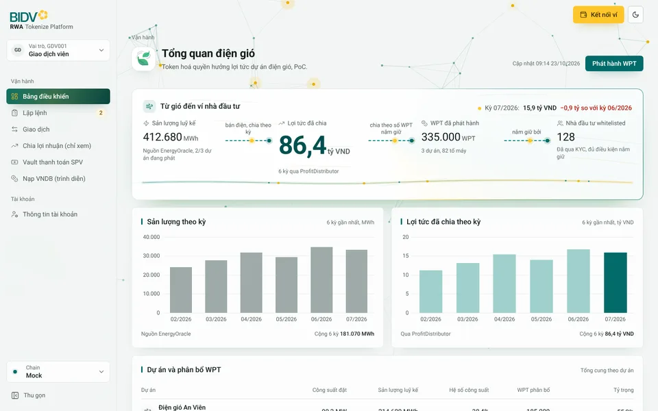
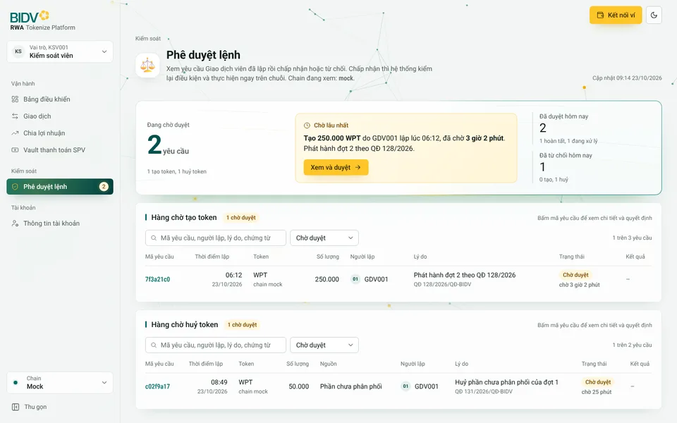
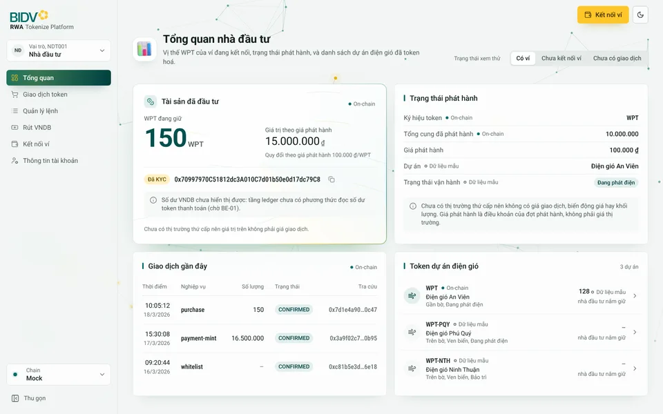

Bản 12: đủ 21 màn theo phong cách xanh ngọc
Bản 11 sửa ba lỗi (viên nang rê chuột không còn đè mục đang mở; bỏ lớp cực quang gây nhiễu, giữ gradient nền và mạng lưới; thẻ bỏ vệt trắng ở mép, nhấn chuột lún nhẹ và bật lại mềm) và dựng đủ 21 màn cùng trang giới thiệu. Mở trang giới thiệu hoặc vào thẳng các màn từ menu trái.
1. Thanh đầu trang và thanh bên
Ở đầu trang chỉ thấy tiêu đề lớn và hai nút ví, sáng tối ở góc phải. Cuộn qua tiêu đề thì tiêu đề lớn thu nhỏ, mờ và nhoè dần; cùng lúc thanh đầu cao 44 px hiện nền xanh trầm (từ trong suốt lên 90%), viền dưới chuyển xanh ngọc sang vàng, và tên màn chữ trắng có vạch màu nhỏ trượt vào bên trái. Người dùng luôn biết mình đang ở trang nào.



2. Ba màn đại diện
Bấm để mở bản chạy được. Thử: cuộn trang, rê chuột trên menu trái và trên khối trọng tâm, bấm nút, đổi sáng tối ở góc trên bên phải, thu gọn thanh bên.



3. Logo đã chốt
A cho trang giới thiệu, tài liệu, slide; C cho ứng dụng. Logo BIDV vector hoá tạm từ ảnh Sếp gửi, thay bằng SVG chính thức khi có.

Dùng ở đâu
- A: trang giới thiệu, tài liệu, slide.
- C: thanh bên ứng dụng (bản 12 đang dùng), thanh trên điện thoại.
- C ở cỡ biểu tượng: favicon, thanh thu gọn, biểu tượng ứng dụng di động. Dưới 40 px chỉ còn bông mai trên ô xanh ngọc; từ 40 px có thêm chữ RWA (Sếp đã đồng ý).
- B: không dùng.
4. Hiệu ứng
Cơn gió quét khi mở trang; tiêu đề hiện từng từ; biểu tượng 3D nảy ra; khối trọng tâm mở từ trái sang; các khối khác lướt lên theo hướng gió, dòng bảng hiện lần lượt; số lăn như đồng hồ; cột biểu đồ mọc bằng lò xo; viên nang menu kéo giãn và trượt sang mục mới khi đổi trang; ánh sáng theo chuột trên thẻ; thẻ nhấc lên khi rê; nút chính hút nhẹ theo con trỏ, nhún và gợn sóng khi bấm; icon vẽ lại nét; đổi sáng tối bằng vòng tròn lan; nền mạng lưới chuỗi khối (nút vàng là token, gói tin vàng chạy trên cạnh, chuột kéo nút lại gần); thanh đầu co giãn theo cuộn; thanh bên thu gọn có lò xo. Mọi chuyển động chạy bằng đường cong lò xo, tắt hết khi người dùng bật "giảm chuyển động".
Bản mẫu tĩnh để duyệt giao diện, dữ liệu mẫu, không có chức năng thật. Icon 3D Fluent Emoji (MIT), logo BIDV vector hoá tạm từ ảnh chủ dự án gửi.